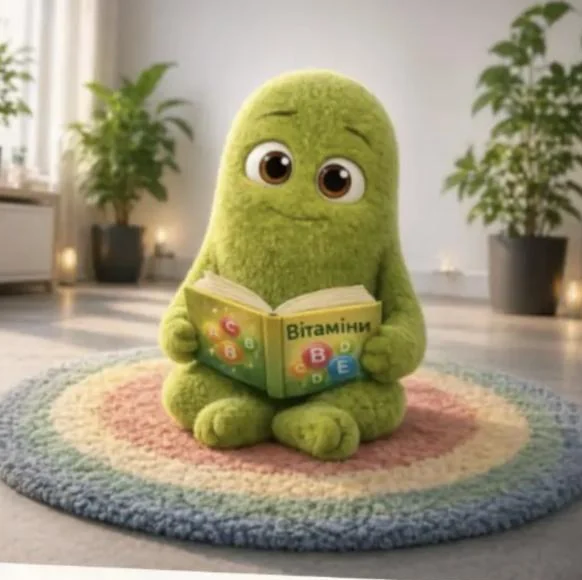
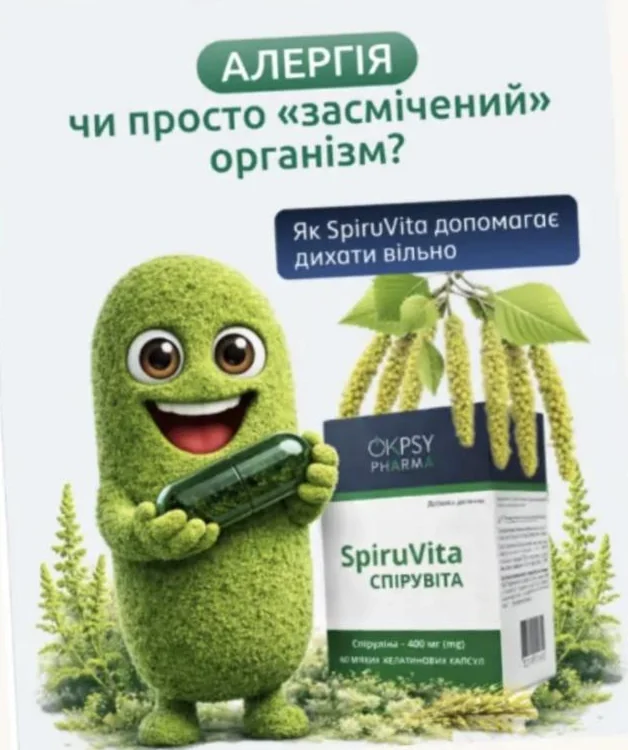
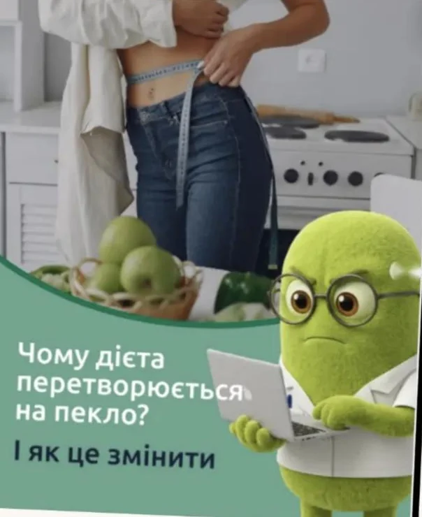
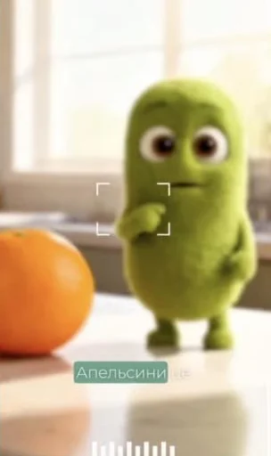
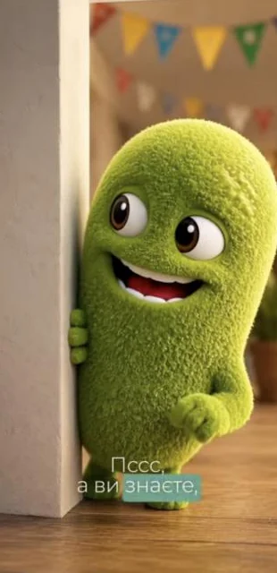

Колись маскот бренду означав ілюстратора, 3D-студію, диктора і кілька місяців продакшну. Бадика ми створили за години — і тепер він щодня пояснює аудиторії складні речі простою мовою.
/чому маскот
У стрічці запам’ятовують образи. Логотип гортають далі, а героя, який щодня говорить з аудиторією, впізнають з першої секунди.
Персонаж стає обличчям бренду:
- бренд швидше запам’ятовують
- складні теми звучать простою, живою мовою
- один тон і характер у всьому контенті
- більше залучення, довший перегляд відео, вища лояльність
/раніше і зараз
Раніше маскот означав ілюстратора, 3D-студію, диктора і місяці продакшну.
Зараз завдяки AI це кілька годин роботи однієї команди. Тож власний персонаж тепер доступний малому та середньому бізнесу.
/кейс: Бадик для OKPsy Pharma
Клієнт: фармбренд OKPsy Pharma.
Задача: персонаж, який живе в постах, Reels і Stories та масштабується без перемальовування.

Аудит ринку → пошук образу → вибір → презентація клієнту → реєстрація маскота
/як ми це робимо
- ОбразСтворюємо базовий вигляд і фіксуємо його як еталон: форма, пропорції, риси обличчя, текстура, колір. Далі змінюються лише пози, емоції та одяг.
- РухиПрописуємо сценарій дій, оживлюємо персонажа — міміка, жести, кліпання, помах — і збираємо все в ролик для Reels і Stories.
- ГолосОзвучуємо Бадика самі, тому емоція точно збігається з рухом, а наголоси завжди правильні.




/один персонаж — десятки форматів
- пізнавальні пости про вітаміни, дієти, алергію
- емоційні та ситуативні Reels
- прогрів і знайомство з продуктом
- спільні відео з людьми
- стікери та фотосесії
/результат
- бренд отримав обличчя
- контент став живішим і зрозумілішим
- продакшн займає менше часу
- ідею легко масштабувати
Маскот працює на впізнаваність і довіру. Кожна публікація з ним закріплює образ, який аудиторія запам’ятовує і з яким асоціює бренд. Мільйонні перегляди й віральні репости тут не мірило успіху — ефект накопичується поступово, як і довіра.